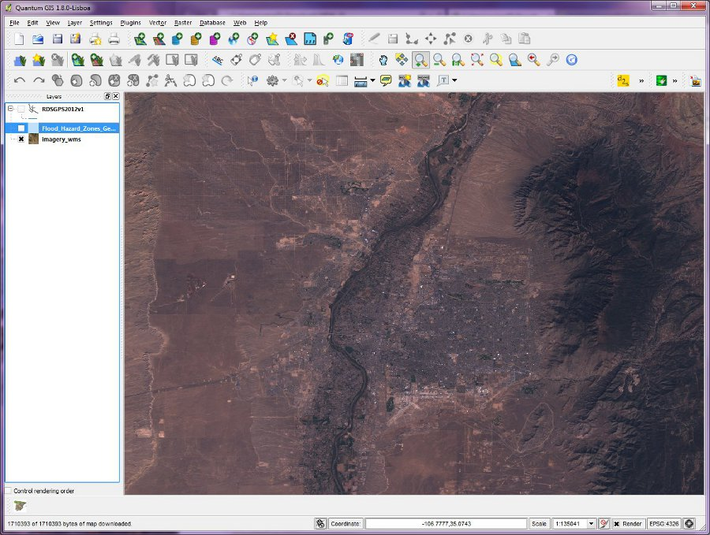
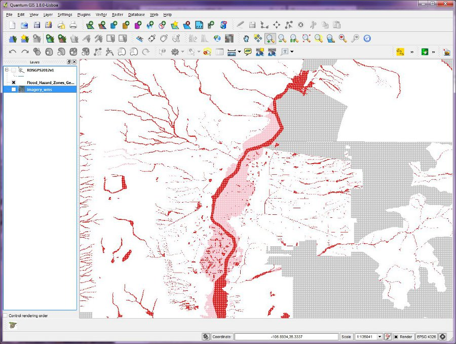
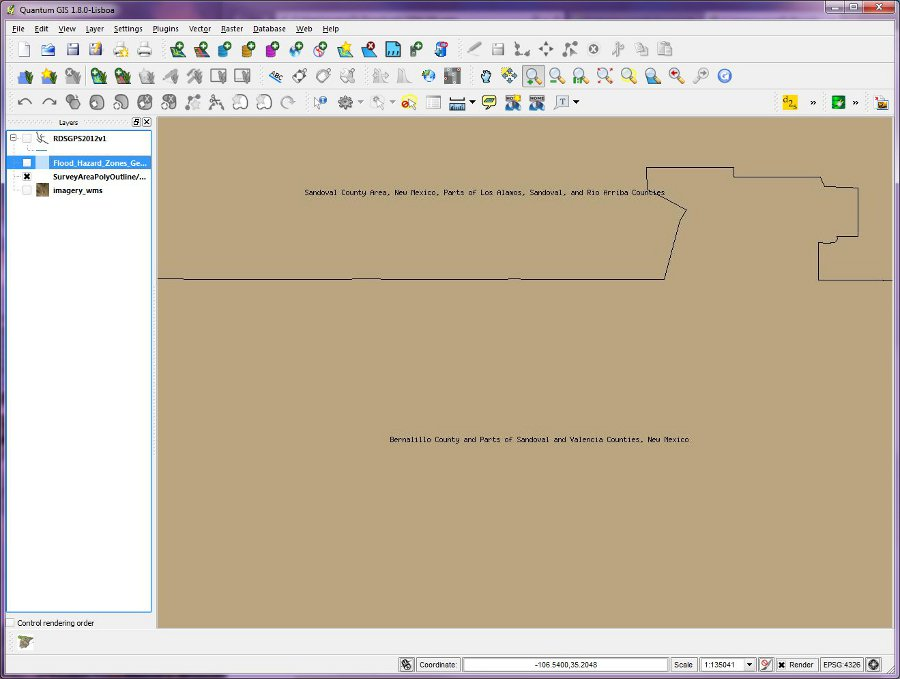
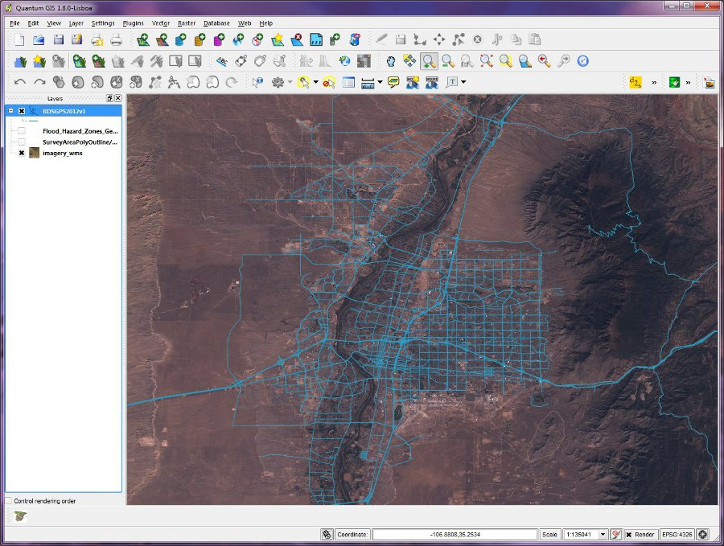
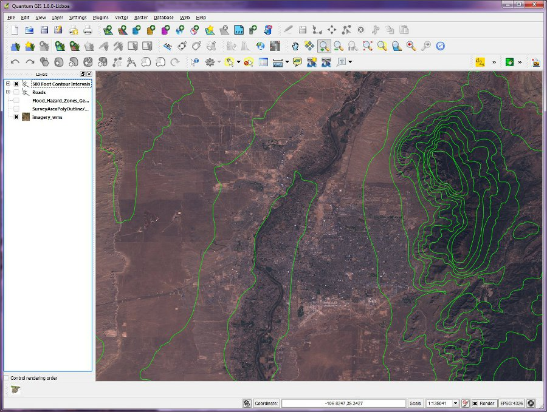
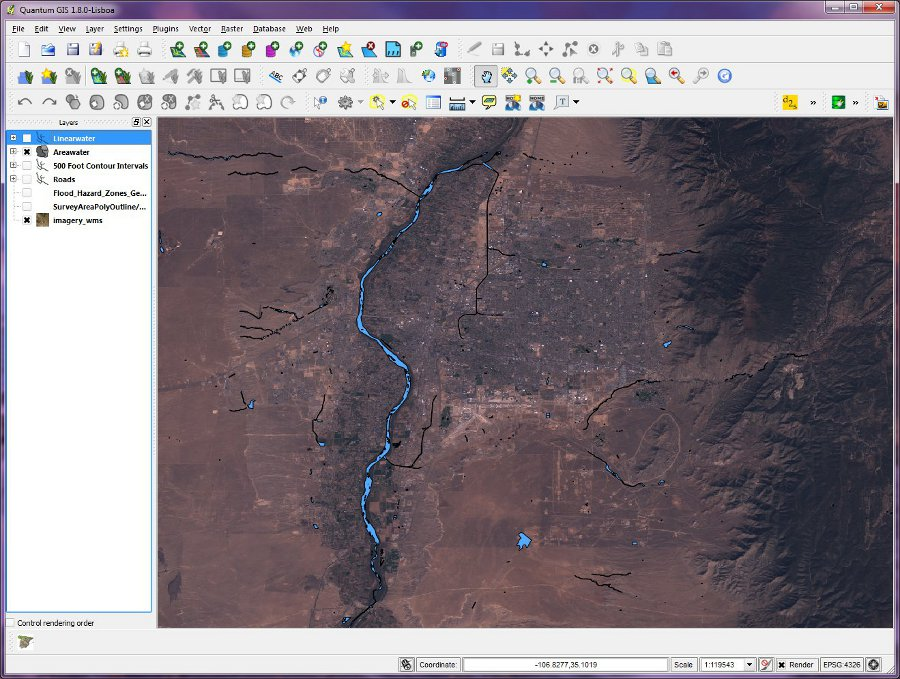

EDAC's Imagery WMS Service:
"http://edacwms.unm.edu/cgi-bin/mapfiles/edacimagery?SERVICE=WMS&REQUEST=GetCapabilities"

FEMA's National Flood Hazard Layer WMS Service:
"http://hazards.fema.gov/wmsconnector/wmsconnector/com.esri.wms.Esrimap/NFHL?REQUEST=GetCapabilities&SERVICE=WMS"

NRCS Soil Data Mart WMS Service:
"http://SDMDataAccess.nrcs.usda.gov/Spatial/SDM.wms?SERVICE=WMS&REQUEST=GetCapabilities"

RGIS Roads (RDSGPS2012v1)
"http://gstore.unm.edu/apps/rgis/datasets/2f4ccda4-a76e-4df0-849e-ee51dbfec492/services/ogc/wfs?SERVICE=WFS&VERSION=1.0.0&REQUEST=GetFeature&TYPENAME=RDSGPS2012v1&SRSNAME=EPSG:26913"

RGIS 500 Ft Countours Intervals (hyp2shp)
"http://gstore.unm.edu/apps/rgis/datasets/c0324950-6f96-49e4-a638-da7423c71ec3/services/ogc/wms?SERVICE=WFS&VERSION=1.0.0&REQUEST=GetFeature&TYPENAME=hyp2shp&SRSNAME=EPSG:4269"

RGIS Areawater (tl_2010_35001_areawater)
"http://gstore.unm.edu/apps/rgis/datasets/d2802611-609c-44e2-951f-cb3f713eac07/services/ogc/wfs?SERVICE=WFS&VERSION=1.0.0&REQUEST=GetFeature&TYPENAME=tl_2010_35001_areawater&SRSNAME=EPSG:4269"
